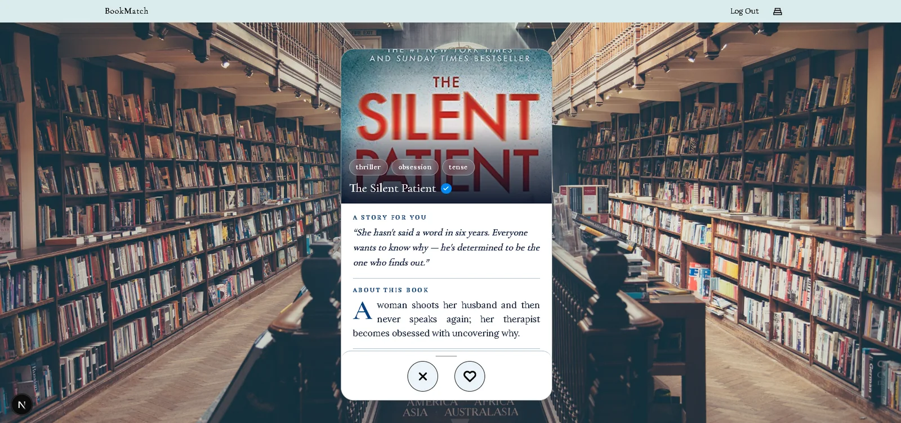
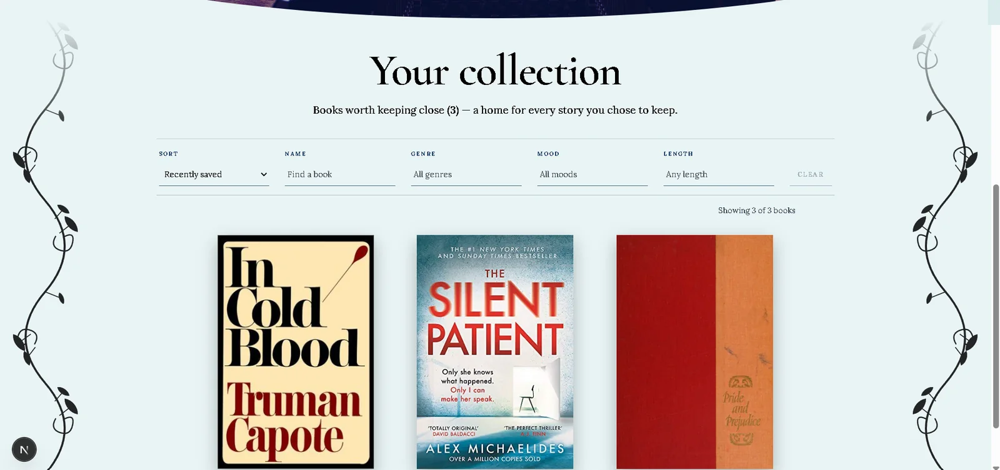

← All work
BookMatch
Swipe-based book recommendations. A Next.js swipe interface on an async FastAPI + PostgreSQL API, with pgvector matching readers to books.
- Role
- Full stack developer
- Team
- 2 people
- Status
- Live
- Links
- Live app ↗ · Code ↗

Problem
- Picking the next book is slow when the options are a long list and a star rating. A swipe gives a fast yes/no signal, and every swipe is data the recommendations can use.
- Built by a team of two, so the API contract, migrations and deployment had to be clear enough for both of us to change them safely.
What I built
- Next.js and TypeScript frontend with Tailwind: sign-in, the swipe deck, and a library of saved books with sorting and filters. The UI is available in 5 languages.
- Async FastAPI backend on PostgreSQL (Supabase) with JWT authentication; profile pictures and book covers stored in Cloudflare R2.
- Recommendation engine: books and readers live in one shared vector space, and pgvector KNN search finds the books nearest to each reader.
- Schema managed through 20+ Alembic migrations, with row-level security on the database.
Key decisions
- Recommendations inside PostgreSQL with pgvector rather than a separate vector store, so matching, users and swipes share one database and one set of permissions.
- Nightly backups from a GitHub Actions workflow:
pg_dumpto Cloudflare R2 with 14-day retention, because a hosted database with real accounts needs a restore path that doesn't depend on seed scripts.
Stack
- Next.js
- TypeScript
- Tailwind CSS
- FastAPI
- PostgreSQL
- pgvector
- Alembic
- JWT
- Cloudflare R2
- GitHub Actions
